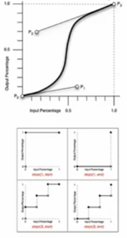

- 介绍
- 1. 页面制作
- 2. JavaScript 程序设计
- 3. DOM 编程
- 4. 页面架构
- 5. 产品前端架构
- 6. 附录 A：书单
- 本书使用 GitBook 发布
Table of Contents generated with DocToc
动画
transition
其为众多 <single-transition> 的值缩写。（当两个时间同时出现是，第一个时间为动画长度，第二个时间为动画延时）
transition: <single-transition> [',' <single-transition>]*
<single-transition> = [none | <single-transition-property>] || <time> || <single-transition-timing-function> || <time>
transition: none;
transition: left 2s ease 1s, color 2s;
transition: 2s;
transition-property
transition-property: none | <single-traisition-property> [ ',' <single-transition-property>]*
<single-transition-property> = all | <IDENT>
transition-property: none;
<!-- 默认值为 none -->
transition-property: all;
transition-property: left;
transition-property: left, color;
transition-duration
transition-duration: <time>[, <time>]*
transition-duration: 0s;
transition-duration: 1s;
transition-duration: 1s, 2s, 3s;
transition-delay
transition-delay: <time>[,<time>]*
transition-delay: 0s;
transition-delay: 1s;
transition-delay: 1s, 2s, 3s;
transition-timing-function
transition-timing-function: <single-transition-timing-function>[',' <single-transition-timing-function>]*
<!-- 默认函数为 ease -->
<single-transition-timing-function> = ease | linear | ease-in | ease-out | ease-in-out | cubic-bezier(<number>,<number>,<number>,<number>) | step-start | step-end | steps(<integer>)[, [start | end]]?)
<!-- 对于 cubic-bezier 的曲线，前两个值为 P1 的坐标，后两值为 P2 的坐标 -->
transition-timing-function: ease;
transition-timing-function: cubic-bezier(0.25, 0.1, 0.25, 1);
transition-timing-function: linear;
transition-timing-function: cubic-bezier(0, 0, 1, 1);

animation
animation: <single-animation> [',' <single-animation>]*
<single-animation> = <single-animation-name> || <time> || <single-animation-timing-function> || <time> || <single-animation-iteration-count> || <single-animation-direction> || <single-animation-fill-mode> || single-animation-play-state>
animation: none;
animation: abc 2s ease 0s 1 normal none running;
animation: abc 2s;
animation: abc 1s 2s both, abcd 2s both;
<!-- 调用多个动画 -->
动画可自动运行，但transition需要触发。
animation-name
animation-name 的名字可自由定义。
animation-name: <single-animation-name>#
<single-animation-name> = none | <IDENT>
animation-name: none;
animation-name: abc;
animation-name: abc, abcd;
animation-duration
与 transition-duration 属性值类似。
animation-duration: <time>[, <time>]*
animation-duration: 0s;
animation-duration: 1s;
animation-duration: 1s, 2s, 3s;
animation-timing-function
其与之前的 transition-timing-function 完全一模一样。
animation-timing-function: <timing-function>#
<single-timing-function> = <single-transition-timing-function>
animation-timing-function: ease;
animation-timing-function: cubic-bezier(0.25, 0.1, 0.25, 1);
animation-timing-function: linear;
animation-timing-function: cubic-bezier(0, 0, 1, 1);
animation-timing-function: ease, linear;
animation-iteration-count
其用于动画执行的次数（其默认值为 1）。
animation-iteration-count: <single-animation-iteration-count>#
<single-animation-iteration-count> = infinite | <number>
animation-iteration-count: 1;
animation-iteration-count: infinite;
animation-iteration-count: 1, 2, infinite;
animation-direction
其用于定义动画的运动方向。
animation-direction:<single-animation-direction>#
<single-animation-direction> = normal | reverse | alternate | alternate-revers
animation-direction: reverse
<!-- 动画相反帧的播放 -->
animation-direction: alternate
<!-- 往返执行动画 -->
animation-direction: alternate-revers
<!-- 相反的往返动画 -->
animation-play-state
其用于设定动画的播放状态。
animation-play-state: <single-animation-play-state>#
<single-animation-play-state> = running | paused
animation-play-state: running;
animation-play-state: pasued;
animation-play-state: running, paused;
animation-delay
其用于设置动画的延时，同 transition-delay 值相同。
animation-delay: <time>[, <time>]*
anim
animation-delay: 0s;
animation-delay: 1s;
animation-delay: 1s, 2s, 3s;
animation-fill-mode
其用于设置动画开始时，是否保持第一帧的动画和动画在结束时时候保持最后的状态。
animation-fill-mode: <single-animation-fill-mode>[',' <single-animation-fill-mode>]*
<single-animation-fill-mode> = none | backwards | forwards | both
animation-fill-mode: none;
<!-- 不做设置 -->
animation-fill-mode: backwards;
<!-- 动画开始时出现在第一帧的状态 -->
animation-fill-mode: forwards;
<!-- 动画结束时保留动画结束时的状态 -->
animation-fill-mode: both;
<!-- 开始和结束时都应保留关键帧定义的状态（通常设定） -->
animation-fill-mode: forwards, backwards;
@keyframes
其用于定义关键帧。
<!-- 写法一 -->
@keyframes abc {
from {opacity: 1; height: 100px;}
to {opacity: 0.5; height: 200px;}
}
<!-- 写法二 -->
@keyframes abcd {
0% {opacity: 1; height: 100px;}
100% {opacity: 0.5; height: 200px}
}
@keyframes flash {
0%, 50%, 100% {opacity: 1;}
25%, 75% {opacity: 0;}
}
<!-- 例子 -->
animation: abc 0.5s both;
animation: flash 0.5s both;
animaiton: abc 0.5s both, flash 0.5s both;